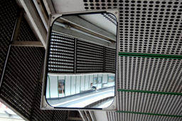

Arbitrary scale results
Next we show results for arbitrary scaling using our CUF upsampler combined with different encoders. Videos producing upsampling images from 1-8 times its original scale, using a CUF filters combined with a SwinIR encoder.
Efficiency: our model is the first supporting continuous upsampling under low memory and computation (flops) footprint.
Archtecture and Method
Our method is based on modeling continuos upsampling filters conditioned on target scale, subpixel position and kernel positions.
Visualization of the 64 filters learned for a EDSR-baseline encoder (left), the subpixel sample grid for a target upsampling of 4x on top of the continuos filter (center) and its corresponding discrete sampling (right).
Our archtecture proposes a lightweight hyper-network with low number of channels per layer and by modeling a depthwise convolution. It is designed to support the decopling of the expansion of the spatial coordinates from the projection into target colors. At the same time, the pointwise layers not increase the number of channels relative to those adopted on the encoder. As a result, our method produces competitive results with sharp images across different endoders at the same time that requires the lowest memory and flop footprint.
Comparative results
Our method produces the sharpest images across different endoders at the same time that uses the lowest computational resources (memory-wise and flops). The interactive plot and the videos illustrate results across different images, encoders and upsampling scales. ( extra results with hightlighted regions.)
-
Select one image to interact with, and mouse-over input image for interacting with the results:
- 
| input | low res. | |
| CUF | LIIF | LTE |
Hard case results
On the impact of the encoder: Next, we illustrate a hard case where the combination of CUF with stronger encoder produces the best results. Features from stronger encoders cover a larger receptive field that directly impacts the results on hard cases where the low-resolution input is ambiguos. Weaker econder clearly suffer from aliasing distortions on these cases. The comparisons show that the combinations with a lighter encoder (EDSR-baseline) perform poorly when compared with a larger encoder (SWINIR). Note that when comparing the different upsamplers under same encoder, CUF produces the sharpest results.
Encoder EDSR-baseline, scale 8x, dataset: Urban100, image id: #030.
| LR input | CUF vs. LIIF | CUF vs. LTE. |
Encoder SWINIR, scale 8x, dataset: Urban100, image id: #030.
| LR input | CUF vs. LIIF | CUF vs. LTE. |
Acknowledgements
The website template was adapted from Ref-NeRF webpage with authors consent.
The ablations replicating previous models were made under LIIF, LTE, SwinIR and ABPN public codebases. We thank the authors for sharing their codes.
Please refresh the page if videos are not loaded or appear unsynced.